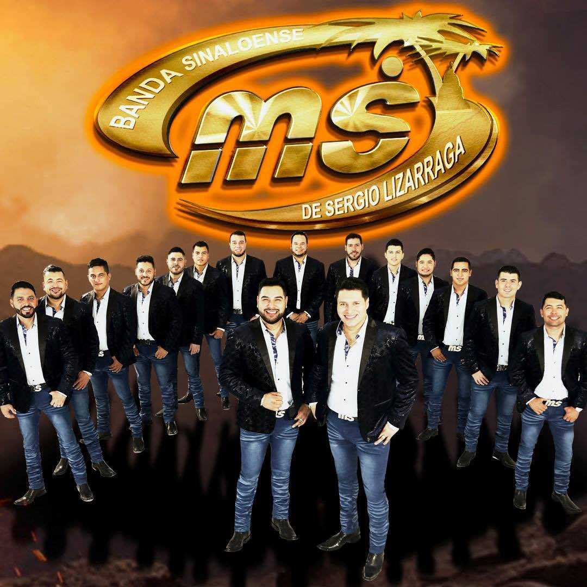
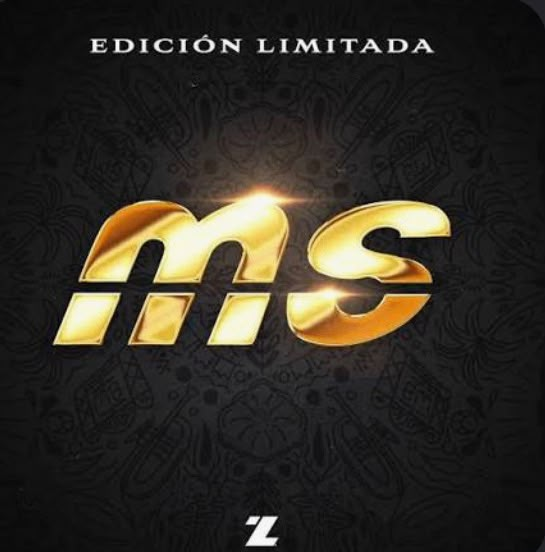
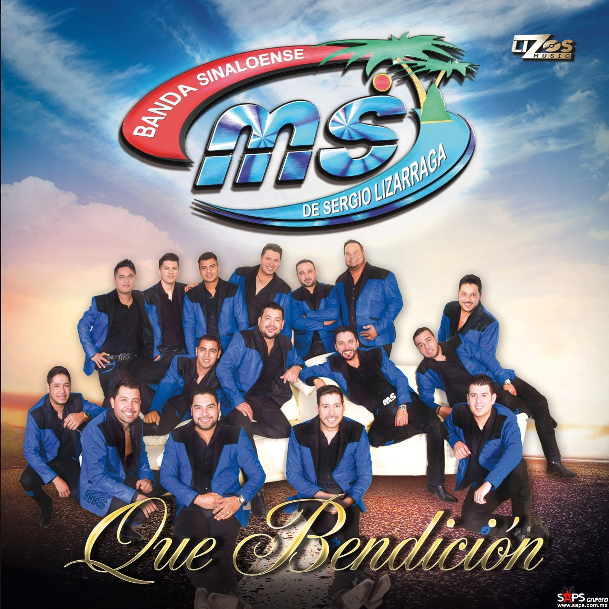

Banda MS de Sergio Lizárraga, conocida artísticamente como Banda MS, es una agrupación de música regional mexicana originaria de Mazatlán, Sinaloa, México. Fue fundada en 2003 y se ha consolidado como una de las bandas más representativas del género. Entre sus canciones más conocidas están El color de tus ojos, Mi razón de ser y Háblame de ti.
Su propuesta musical combina la tradición de la banda sinaloense con elementos contemporáneos de la música popular mexicana. Banda MS ha realizado giras por México, Estados Unidos y otros países, consiguiendo reconocimiento internacional y una gran cantidad de seguidores gracias a sus canciones y presentaciones.
Imágenes de Banda MS


